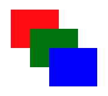
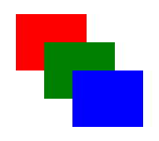

Scalable Vector Graphics (SVG)
- SVG is a markup language for images.
- SVG images use elements as building blocks, just like HTML.
- SVG is great for creating diagrams, icons, and user interface components. It is not well suited to representing photographs, which are better served using bitmaps.
- In many cases, SVG images are smaller and more versatile than a bitmap of the same thing. For example...
-
This is a bitmap image that is
2289 bytes in size.

-
This is an identical SVG image, however it is only
291 bytes - over seven times smaller.

- SVG images can also include animation and user interaction, so their potential should become apparent.